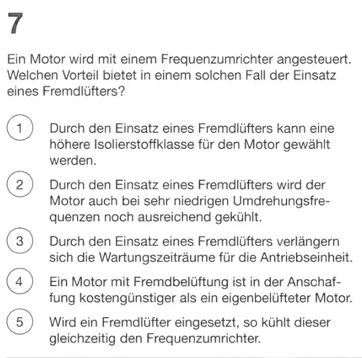
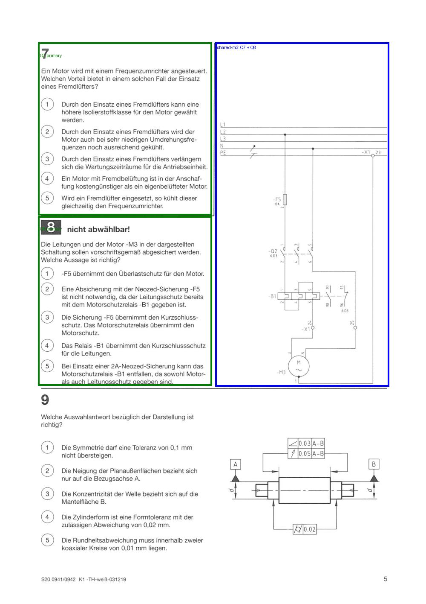

Q7 · eigener Bereich

Bitte prüfen Sie nur diese zwei Zuordnungen. Beide Aufgaben bleiben eigenständig; die Zeichnung wird einmal als gemeinsame Anlage gespeichert.
Q7 → shared-m3
Q8 → shared-m3
Quelle: Sommer 2020 Arbeitsplanung, PDF-Seite 5. Kein Bereich hat zwei Eigentümer.
Quellenbelege werden geprüft…
Nach dem Bestätigen wird eine JSON-Datei heruntergeladen. Bitte geben Sie diese Datei an Codex weiter. Die Bestätigung gilt für genau diese Bilder und Profilrevision. AP wird dadurch noch nicht automatisch veröffentlicht.
Keine Koordinaten erforderlich. Eine geänderte Zuordnung bleibt zur Prüfung offen.
36/36 Aufgaben strukturell geprüft. Manuelle Zuordnung noch offen. Keine formale Segmentierung, keine MC-/U-Antwortverarbeitung in diesem Schritt.
30 gecachte Seiten; 29 unveränderte Seitenprüfungen wiederverwendet. Neue PDF-Renderings: 0. Alte PDF-Scans: 0.

Die alte blockierte Revision und ihre Ereignisse bleiben unverändert. Die neue Revision ist nur vorgeschlagen. Der erste Vorschlag bleibt ebenfalls erhalten; die aktuelle Fassung korrigiert zusätzlich die sichtbare Trennlinie zwischen Q7 und Q8.